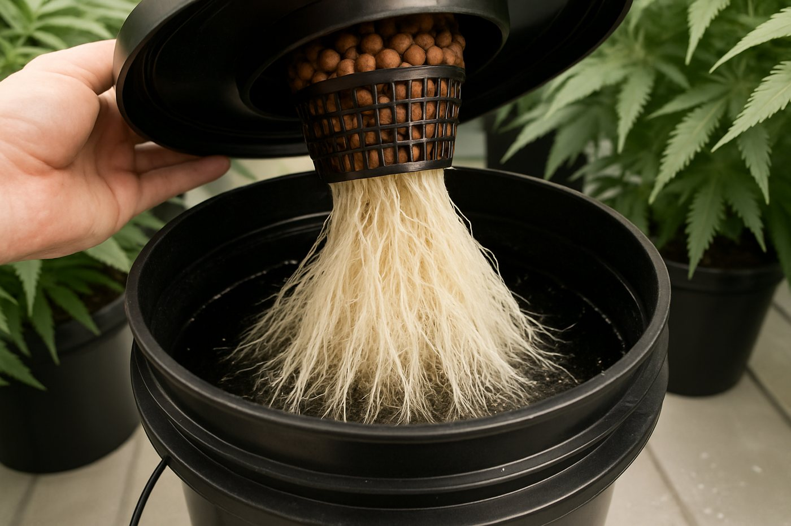
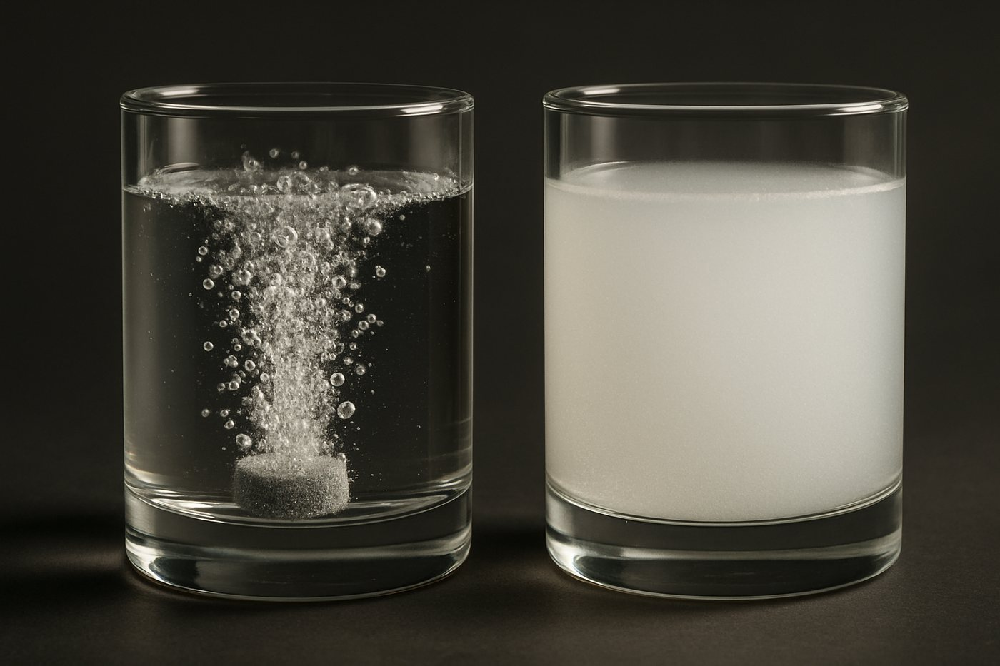
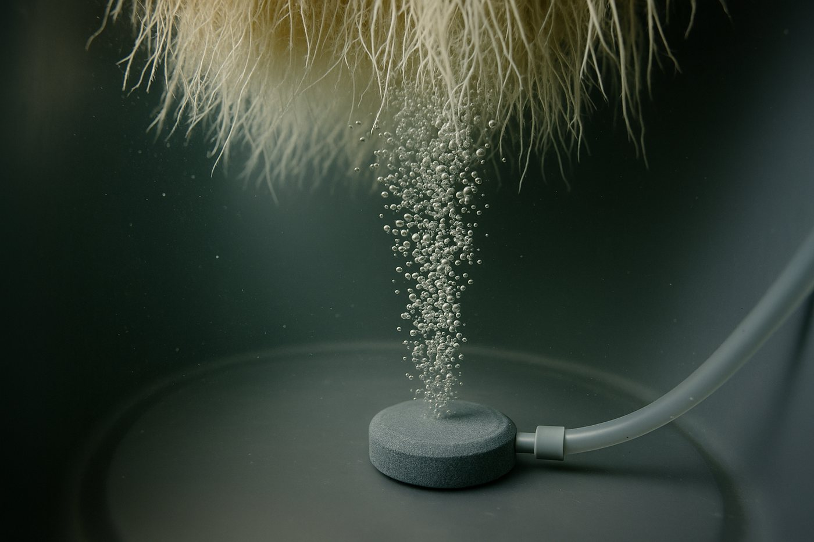
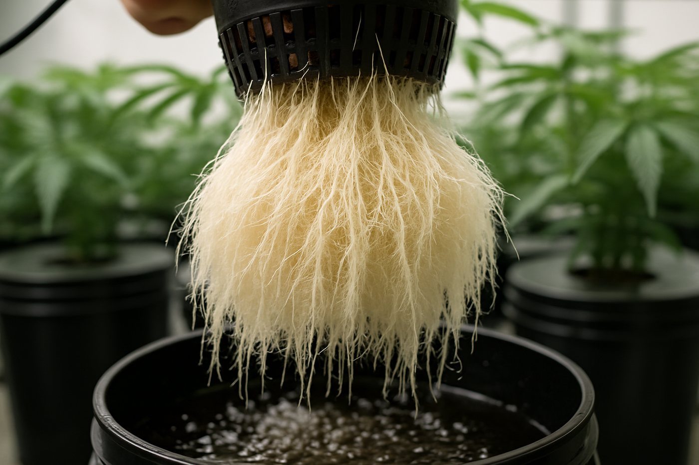
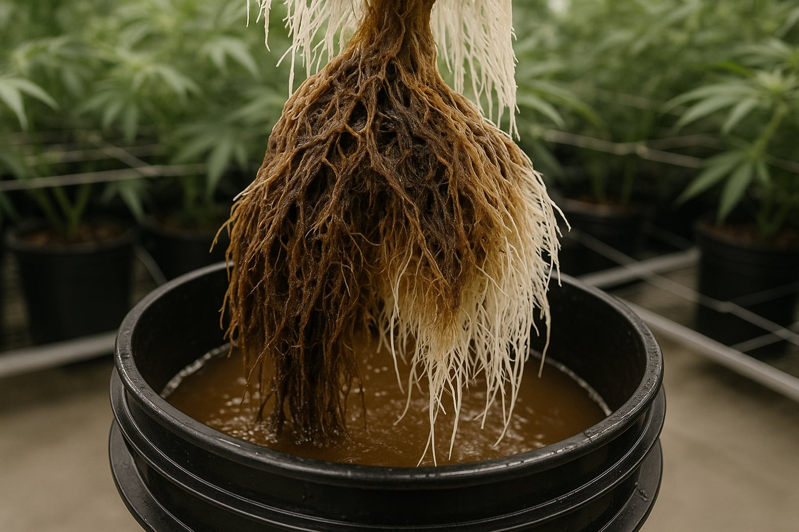
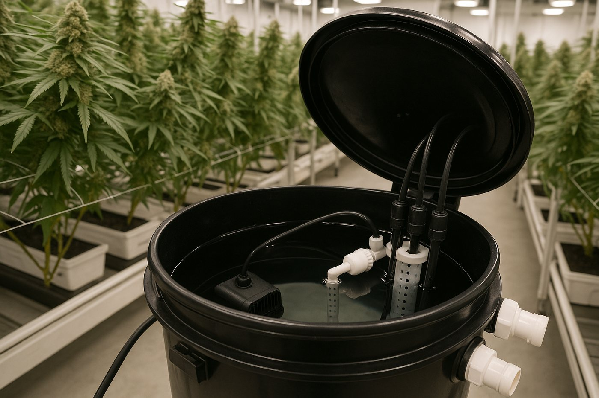

Deep water culture, from first principles
Roots hanging in nutrient water have no substrate to hide behind. This paper builds the system from the physics up: how much oxygen the water can actually hold, why more bubbling makes iron uptake worse, what an ORP probe is really measuring, and how a commercial RDWC programme is put together.
Purpose and scope
In coco or rockwool the substrate is a buffer. It holds water, holds air, holds a charge, and quietly forgives the feed you got slightly wrong this morning. Deep water culture deletes that buffer. The roots hang in the nutrient solution itself, and the reservoir has to do every job the substrate used to do, simultaneously, continuously, with no margin.
Everything else in this paper is a consequence of it. The highest growth rates in soilless culture and the fastest crop failures in soilless culture come from the same property: there is nothing between your decision and the root. Done well the upside is real, reviews of deep-water-culture tomato report consistently better biomass accumulation, photosynthetic efficiency, root development and yield than soil or other hydroponic systems, attributed to the continuous supply of oxygenated, nutrient-rich solution[7].

- Dissolved oxygen, how much O2 is in the water, in mg/L. Sets the ceiling on root respiration.
- Solution temperature, sets both how much oxygen the water can hold and how fast the roots and microbes consume it. The master dial.
- ORP, oxidation-reduction potential, in millivolts. The most misread number in hydroponics, and the one this paper spends the most time on.
Anyone running or considering water culture, and anyone who has looked at an ORP reading and not known what to do about it. It assumes you already know what EC and pH are. If you do not, read the pH and water-quality papers first. Cannabis is the worked example, but the physics applies to any crop.
Evidence and limitations
We've gone to great lengths to keep these guides honest. One of the main ways we do that is self-review: we actively look for claims that are subjective, only lightly backed by literature, or based on grower practice rather than a controlled study — and we call those out instead of dressing them up as settled science.
Often there simply is no paper for the decision you're making. In those cases we're drawing on what other growers report and what has worked in our own rooms. That can still be useful — but it is not a lab proof. Do what works for your plants, your room, and your meters. If a table disagrees with your crop, believe the crop and log the difference.
- Core definitions and measurement units used in the paper
- Safety-critical limits where occupational or standards sources are cited
- Numeric stage targets (light, climate, feed) as starting bands, not laws
- SOPs that work in many rooms but need your genetics and meters
- Any single-number 'guaranteed' yield or potency claim without a multi-site trial
- Controller setpoints copied from another facility without re-calibration
See something glaringly wrong? Tell us and we'll fix it. Please open a GitHub issue with the paper name and what looks off (include a source if you have one): Report an accuracy issue. Local law, labels, and licences always override any recipe here. Inline notes labelled grain of salt flag the highest-risk over-trust points in the text.
Oxygen solubility in nutrient solution
Start with the constraint nobody can negotiate. Oxygen is barely soluble in water. At 20 °C under normal air at sea level, water holds about 9.1 mg/L of dissolved oxygen at equilibrium[8]. Air itself, by comparison, is about 280 mg/L of oxygen. Water at saturation carries roughly one-thirtieth of the oxygen that the same volume of air carries. That is the number a submerged root has to live on.
Solubility falls roughly 1.7% per °C near 20 °C. Over the same 10 °C, biological oxygen demand roughly doubles, root and microbial respiration follow a Q10 near 2. Supply down about a sixth, demand up about double: the ratio of available oxygen to oxygen demanded falls by roughly a factor of two and a half. This is why reservoir temperature, not aeration hardware, is the first thing to check when a system starts failing.
Now the part that confuses people. Growers running an oxygen concentrator through a fine diffuser routinely report 15–25 mg/L, and then worry that they are dangerously supersaturated. Both halves of the following sentence are true, and holding both at once is the key to understanding the reading.
At 22 °C air-saturated water holds about 8.7 mg/L. A reading of 20 mg/L is about 2.3× air saturation. If you switched the gas off and left the water open to the room, it would slowly out-gas back toward 8.7.
A pressure-swing concentrator delivers roughly 90–95% oxygen. Henry's law scales with partial pressure, so at 22 °C that gas could push water to roughly 38 mg/L at equilibrium. Your 20 mg/L is about half of that. While the gas is flowing, nothing is straining to escape.
A solution that is supersaturated relative to air but undersaturated relative to the gas being injected is stable while the gas flows and decays gently when it stops. It does not spontaneously nucleate bubbles on root surfaces. The failure mode to actually worry about is not gas embolism, it is the pump stopping, at which point you are on a decay curve toward 8.7 mg/L with a root mass sized for 20.
The other lever is bubble size. Conventional air stones make bubbles of a few millimetres that rise and burst in seconds. Nanobubbles, below roughly 200 nm, carry a negatively charged surface that resists coalescence and a high internal pressure that keeps gas dissolving. In the original characterisation work they remained measurable in water for about 70 days[13]. That is a genuinely different transport regime, not a marketing gradient: the gas keeps dissolving long after the visible bubbling has stopped.

Plant oxygen demand
The literature is unusually consistent about the bottom of the range and unusually messy about the top. Both facts are useful.
At the bottom: in bell pepper grown in floating culture, growth and photosynthesis were measurably impaired below about 3.8 mg/L on ammonium nutrition and below 5.3 mg/L on nitrate nutrition, with the authors recommending those as hard floors[4]. That nitrogen-form split is not a curiosity: nitrate assimilation is itself energetically expensive, so a nitrate-fed root has a higher oxygen bill than an ammonium-fed one.
At the top, the honest answer is that returns diminish and then stop. Raising NFT lettuce from about 7 mg/L to about 8.5–9 mg/L produced large gains, fresh mass up to 110% higher in one cultivar, root mass up 78%[5]. But a deep-water-culture trial that ran controlled enrichment at 10, 15 and 20 mg/L found the response was entirely crop-specific: arugula gained 63–191% above 15 mg/L, kale gained nothing at any level, and the enrichment carried a 140% higher electricity cost. Only arugula at 20 mg/L returned enough to pay for the energy[6].
Low root-zone oxygen does not begin with brown roots. It begins with an energy deficit. The root cortex may still get enough O2 to absorb nutrients while the stele, the central tissue that loads nutrients into the xylem for transport to the shoot, goes hypoxic and its H+-ATPases stall[2]. The plant takes ions up and cannot ship them. Separately, hypoxia closes aquaporins and triggers stomatal closure, so water transport falls too[3]. You see a plant that looks nutrient-deficient and slightly wilty with a perfectly good feed in the tank. Root browning and lysis come later[1].
A deficiency pattern that does not respond to correcting the feed, in a system whose EC and pH are on target, should send you to the DO meter and the thermometer before it sends you to the nutrient shelf.
Aeration limits and dissolved oxygen
This is the section most likely to change how you run your system. Aeration delivers oxygen, which is good. Aeration also delivers agitation, which is not. Past a modest rate, the agitation costs you more than the oxygen buys.
The clearest demonstration comes from deep-flow hydroponics run at aeration rates from 0 to 2 L/min. Gentle solution movement (not violent, gentle) dramatically reduced iron uptake and induced chlorosis in sunflower and corn. The same nutrient solution at the same pH in a peat-based medium produced ample iron and chlorophyll. Tomato was largely unaffected; species differ[11].
A root does not simply absorb whatever is in the bulk solution. It builds a thin unstirred boundary layer around itself and chemically engineers it, pumping out protons to acidify it, exuding reductants and chelators to make iron available. That microenvironment is the plant's own nutrient-acquisition machinery. Bubbling stirs it away. Turning the aeration up does not just add oxygen; it demolishes the boundary layer the root built to feed itself.[11]
There is a second, blunter mechanism. Aggressive aeration strips dissolved CO2 out of the solution. Carbonic acid is a real contributor to solution pH, so venting it drives pH up. In a deep-water-culture aquaponics trial the heavily aerated beds yielded 29% less than unaerated controls at harvest, and dissolved oxygen never dropped below 5 mg/L in any treatment, so oxygen was never the limiting factor. The authors attributed the loss to the pH shift that came with the aeration[12].
So what rate is right? Two independent sources converge on almost exactly the same number, which is the most reassuring thing in this paper.
A zero-discharge hydroponic management system holds DO near saturation with gentle aeration at about 100 mL·min-1 per litre of solution, in a bed at least 20 cm deep. Ample depth stabilises concentrations and reduces root density; gentle aeration improves uniformity without destroying the rhizosphere.[10]
A commercial RDWC procedure specifies one 5 × 5 cm medium round air stone per 30 L bucket, positioned at the bottom, about 2.5 cm from the wall, and explicitly never directly under the net pot, because ‘too much turbidity can cause severe damage to new roots’.[39]
A 30 L bucket at 100 mL·min-1·L-1 wants about 3 L/min of air. Reckoned on the operating volume of roughly 19 L rather than the nominal bucket size, it wants about 1.9 L/min. A single medium round air stone at typical manifold pressure flows somewhere in the 2–4 L/min range. The peer-reviewed number and the commercial spec land on the same hardware. A researcher measuring iron chlorosis and a commercial grower watching root damage found the same limit from opposite directions.
Air stones at the bottom of the bucket and offset from the wall let the column rise past the root mass rather than through it. A stone directly under the net pot drives the highest-shear part of the plume straight through the youngest, most fragile root tips. Same air volume, completely different outcome.[39]

This is also the strongest argument for nanobubble generation over conventional stones. Nanobubbles dissolve gas without producing a rising plume, which decouples oxygen delivery from mechanical agitation, the two things a coarse air stone forces you to buy together. Micro/nanobubble-aerated irrigation at 15 and 30 mg/L produced larger root volume, richer rhizosphere bacterial communities and higher yields than at 5 mg/L[14], and reviews of the technology in controlled environment agriculture frame it primarily as a way to keep the root zone aerobic enough for beneficial microbes to function[15].
Interpreting ORP readings
Oxidation-reduction potential is the most commonly misinterpreted measurement in water culture. It is worth getting right, because the correct interpretation changes the action you take.
Here is where most people go wrong, and the correction is not what you would guess. Raising dissolved oxygen does reliably raise ORP, but almost none of that rise is oxygen acting on the electrode. Both halves matter. Growers who are told ‘ORP is not an oxygen measurement’ and then watch their ORP jump 200 mV when they switch to an oxygen concentrator quite reasonably conclude they have been misinformed. They have not; the causal chain just runs through the water rather than through the electrode.
The O2/H2O couple has a large standard potential on paper but exchanges electrons extremely slowly at a platinum surface. In the language of electrochemistry it has a very low exchange current density: it is kinetically irreversible. Two things follow. The electrode never actually reaches oxygen equilibrium, at pH 5.8 a fully equilibrated oxygen electrode would sit near 690 mV against a silver/silver-chloride reference, and real reservoirs read hundreds of millivolts below that. And the direct response to oxygen concentration is small enough that you can calculate it on the back of an envelope.
The Nernst slope for a four-electron couple is 59.16 ÷ 4 = 14.8 mV per decade of oxygen partial pressure. Going from air (pO2 0.21 atm) to a concentrator at roughly 93% O2 is 0.65 of a decade. Maximum direct shift: about 10 mV. If your ORP moved by more than a few tens of millivolts, oxygen did not do it directly. Something in the water changed. And that is worth knowing, because it is usually the more important fact.
A grower running a nanobubbler reported ORP sitting at 220-260 mV on plain air. The system mostly worked, but new reservoirs with freshly transplanted clones brought recurring Pythium and cyanobacteria, persistent biofilm, and one detail that gives the whole game away: the roots stayed up in the clay pebbles and would not grow down into the water. After switching the same system to an oxygen concentrator, ORP settled around 480 mV, biofilm essentially stopped, and the root-avoidance resolved.
That is a ~240 mV shift where the arithmetic above allows about 10. The other ~230 mV is not oxygen on the electrode. It is the reservoir itself having changed. At 220-260 mV the water was carrying a real load of reduced organic carbon and supporting active anaerobic and micro-aerophilic metabolism. Those reduced species are fast, well-poised couples, and they were holding the electrode down. Flooding the system with oxygen burned that load out and collapsed the population producing it. Remove the reductants and the electrode floats up to a far higher mixed potential.
So the rise is real, it is useful, and it is worth acting on. It is not a measurement of oxygen. It is the cleanliness readout responding to a cleanliness change that oxygen caused. Which is exactly what ORP is for.
Gas-liquid interfaces at micro and nano scale have been shown to generate hydroxyl radicals with no catalyst at all, driven by hydroxide enrichment and the interfacial electric field[16], and spin-trap work has detected radical signatures in microbubble-treated water months after treatment[17]. Against that, a careful study found no detectable hydroxyl radical from oxygen nanobubbles under ambient conditions, and showed that a widely used fluorescent probe returns a false positive because the bubble surface is proton-rich[18]. Treat any radical contribution as unproven and second-order. The reductant-removal mechanism above is sufficient to explain what growers actually observe, and it does not require the chemistry to be exotic.
A rigorous study of natural waters calculated the redox potential separately for six different couples in the same water. They disagreed by up to 1200 mV. The authors concluded that in dilute waters with low concentrations of redox-active species, the measured platinum potential is a mixed potential of limited quantitative meaning, and cannot be used to model speciation[19]. A hydroponic reservoir is exactly such a water.
The second surprise is that ORP is meaningless without the pH beside it. Most environmentally relevant redox couples consume protons as they accept electrons. The Nernst equation makes the consequence exact: at 25 °C the potential shifts by about 59 mV per pH unit, falling as pH rises.
A grower reported pH moving from 6.0 to 5.8 across a day while ORP went from 476 to 482 mV. Is that a real change in the chemistry? Run the number: a drop of 0.2 pH units should raise the potential of a proton-coupled couple by about 0.2 × 59 = 12 mV. Observed was +6 mV, same sign, roughly half the magnitude. The ‘ORP climb’ was largely the pH change being reported back, and if anything the underlying redox chemistry drifted slightly downward. Logging ORP without logging pH alongside it produces exactly this kind of phantom trend.
The third surprise explains a common frustration: probes that take hours to settle in the reservoir but minutes in calibration fluid.
ORP standards such as ZoBell's solution or quinhydrone are engineered to be strongly poised. They contain a fast, reversible couple at millimolar concentration precisely so the electrode locks on. A clean, well-oxygenated, low-organic nutrient solution is the opposite: chemically it is close to a blank. A probe that takes hours to settle after being cycled or re-immersed is correctly reporting that your solution has almost nothing redox-active in it, which for a mineral hydroponic system is good news.[19]
None of which means ORP is useless. It means ORP is a sanitiser and cleanliness gauge, and used that way it is genuinely valuable. It is the established control variable for hypochlorous-acid disinfection in produce handling, where it tracks free available chlorine far more responsively than a concentration test[20].
A commercial RDWC procedure treats it exactly this way, and defines three zones with a sensory cross-check for each[39]:
| Zone | What is happening | Smell | Consequence |
|---|---|---|---|
| Anaerobic | ORP has fallen; reduced organics and anaerobic metabolism dominate. A field report of a persistently biofilm-prone air-stone system put this at 220-260 mV | Putrid | Pathogen growth, root rot, roots refusing to enter the water |
| Safe | Clean water, oxidiser present but not accumulating | Fresh bean sprouts | White roots, normal uptake |
| ORP shock | Oxidiser over-dosed; highly oxidised environment | Chlorine | Root's ability to exchange nutrients is impaired |
The manufacturer's own warning is explicit: hypochlorous acid is safe to plant tissue, but overuse in an RDWC system creates a highly oxidised environment that reduces nutrient uptake, and it ‘appears as a nutrient deficiency, yellowing or dry, crusty foliage’. RDWC needs much lower ORP than other methods because of the extended contact time and the sheer volume of solution touching root tissue[39]. Two different root-zone faults, hypoxia and over-oxidation, both present as leaf yellowing. Guessing between them costs you a crop.
A high, stable ORP mostly means your solution is clean and free of reduced organic load. There is no oxidiser present to shock anything, so a high number is not a warning, read it as a hygiene indicator. It is the low end that should worry you: a reading that sits low and drifts lower, with no oxidiser in the system, is reporting an accumulating reduced load and a reservoir heading anaerobic.
ORP is now tracking your oxidiser residual and the manufacturer's shock zone is a real risk. This is when the number needs an upper limit, a logged pH beside it, and a reduction in dose rather than an addition of anything.
A probe sitting in an active bubble plume reads the bubbles as much as the water, which is the usual explanation for a DO reading that swings between 15 and 25 mg/L. Mount probes in a calm, flow-through pocket, a perforated bottle or a small stilling well fed by circulation but shielded from the air stone. Biofilm growing on the electrode surface itself shifts a platinum reading by hundreds of millivolts[21], so probe cleaning is a scheduled task, not a troubleshooting step.
Iron chelation and chlorosis
Iron is the element water culture punishes you over. It is required in large amounts relative to other micronutrients, it is almost insoluble in oxygenated water at anything above mildly acidic pH, and it only stays available because we wrap it in a chelate.
The three common chelates are not interchangeable. They differ in how high a pH they can hold iron at, and in how well they resist having their iron displaced by competing metals.
| Chelate | Practical pH ceiling | Behaviour | Cost |
|---|---|---|---|
| Fe-EDTA | ~6.0–6.5 | Becomes unstable above pH 6.5; iron is displaced and forms insoluble FePO4 and Fe(OH)3. Also competes with Cu, Zn and Mn for the ligand[22] | Lowest |
| Fe-DTPA | ~7.0–7.5 | A meaningful margin above EDTA, and the usual choice when pH cannot be held tightly or when conditions are oxidising | Middle |
| Fe-EDDHA | ~9.0+ | Holds iron under genuinely alkaline conditions; stability is well characterised across pH and over time[23]. Stains solutions dark red | Highest |
One widely used mineral programme splits the iron between products: the base product supplies iron as Fe-EDTA alongside calcium nitrate and the EDTA-chelated micronutrients, while the bloom product supplies iron as Fe-DTPA[40]. Read against the pH schedule. Which starts around 6.2–6.3 and steps down to 5.8 through flower[39] — that is a sensible hedge: EDTA does the cheap work in the acid part of the range, DTPA provides margin for the early, higher-pH part of the run and for any drift.
Interveinal chlorosis in new growth, yellow between green veins on the youngest leaves, is the classic iron signature. In water culture it has at least two causes that call for opposite actions:
- Chelate failure. PH has drifted above what your chelate holds. Fix the pH, or move to a stronger chelate.
- Rhizosphere stripping. Aeration is agitating away the boundary layer the root uses to acquire iron[11]. Turn the air down.
Adding more iron fixes neither, and in the second case makes the underlying mismanagement harder to see.
Research into alternative iron sources continues, Schiff-base Fe(II) complexes stable at alkaline pH have outperformed both Fe-EDTA and Fe-EDDHA on root and shoot dry weight in maize[24], but none of it is commercially relevant yet. For now the lever is pH control and chelate selection.
Organic inputs in recirculating reservoirs
Ask whether to run kelp, fulvic acid or microbial inoculants in DWC and you will get two confident, opposite answers. Both camps are describing real experience. The disagreement is about which constraint binds in their system.
Every gram of reduced organic carbon you add to a reservoir is food for heterotrophic bacteria. Those bacteria multiply and respire, and respiration consumes dissolved oxygen. In water-treatment language you have added biochemical oxygen demand. You are now spending part of your aeration budget on feeding microbes rather than roots, and the organic load will also pull ORP down as reduced compounds accumulate.
That is the case against. It is a real mechanism and it is why the standard advice for mineral hydroponics is to keep the solution clean. A commercial RDWC line goes further and explicitly dose-schedules a hypochlorous-acid product throughout the run precisely to keep organic load from accumulating, and warns that lines previously used with organic inputs may need repeated cleaning cycles to clear organic particulates[39].
Now the case for, which deserves a fair hearing. Growers running high dissolved oxygen, particularly nanobubble systems holding 15–20 mg/L, report running fulvic acid and biological inputs successfully, with no root disease. That is coherent: BOD is a rate problem, and if your oxygen supply rate is two to three times what a conventional air stone delivers, you can carry an organic load that would suffocate a conventional system. Humic and fulvic substances have well-documented biostimulant effects on lateral root growth and nutrient-use efficiency[29], and reviews of oxygenated nanobubble technology explicitly frame high DO as the enabling condition for beneficial microbes to function in the root zone[15].
The microbial community in a recirculating system is not a threat by default. In deep-water-culture lettuce run over five reuse cycles, bacterial communities shifted significantly between cycles and some correlated with plant-defence gene expression, the authors argue that solution communities which activate plant defences are a promising route to chemical-free Pythium suppression[27].
Plants exert a stronger selective influence on their own rhizosphere than the water column does. In a comparison across hydroponic and aquaponic sources, root community composition clustered by plant, not by what was dosed upstream[28]. You have less control over the root microbiome than the product labels imply.
Ask what your dissolved-oxygen headroom is. Running near air saturation on air stones, at 8–9 mg/L, you have almost no margin, keep the reservoir mineral and clean. Running an oxygen concentrator or nanobubble generator at 15–20 mg/L, you have real headroom and can spend some of it on biology. Either way, measure DO before and after you introduce an organic input. If it drops and stays down, the microbes are eating your margin.
Fulvic and humic products often carry their own iron and chelating capacity, which is why adding them can visibly move ORP, an initial drop as reduced carbon enters, then a sustained shift as the iron equilibrium re-establishes. Do not read that ORP movement as evidence about oxygen. It is a chemistry change, and it is happening to a chelate system you have now made more complicated to reason about.
If you do want biology, targeted inoculants have better evidence behind them than general-purpose organic feeds. Bacillus subtilis and Pseudomonas fluorescens applied together suppressed Pythium aphanidermatum synergistically, upregulating defence genes and raising survival to 83%[30], and Pseudomonas biocontrol across crops can match chemical fungicides, with the consistent caveat that field performance is far less reliable than laboratory performance[31].
Root rot: oxygen stress and pathogen risk
The single most important finding in the water-culture pathology literature is that low dissolved oxygen and Pythium root rot are not two independent risks. They are one coupled failure with a shared pathway through root-zone oxygen status.
A review synthesising hydroponic systems engineering, plant physiology and oomycete pathology makes the case directly. Progressive root-mat development degrades passive aeration and creates hypoxic conditions. Hypoxia impairs root membrane integrity and alters the exudate profile leaking from the root. Those altered exudates are what Pythium zoospores home in on, encyst against, and use to make the transition from biotrophic to necrotrophic, from quietly present to actively killing[26].


The definitive review of Pythium in hydroponic crops draws a conclusion that contradicts how most systems are designed: measures that disinfest the nutrient solution as it recirculates outside the crop have commonly minor impact on epidemics. What works is treatment that suppresses the pathogen in the roots and root zone[25]. A UV steriliser on the return line is doing less than the brochure implies if the root zone itself is warm and under-oxygenated.
Environmental stress is the other half of the story. The same review finds stress factors predispose roots to Pythium attack by stress factors, and notes that infection markedly slows leaf-area expansion and whole-plant carbon gain without significantly reducing photosynthetic efficiency per unit leaf area[25]. The plant is not sick-looking; it is just quietly building less canopy than it should. By the time it looks obviously wrong, you have lost weeks.
In water culture there is an early behavioural sign worth more than any probe: roots that stay up in the clay pebbles and will not grow down into the solution. A root system actively declining to enter the water is telling you the water is hostile, too warm, too low in oxygen, or carrying a microbial load it is avoiding. Growers who fix the oxygen supply report the behaviour reversing. Read it as a root-zone alarm, not as a slow-establishing plant.
On chemical oxidisers as a treatment: they work, and they have a cost. Hydrogen peroxide applied into hydroponic solution across 0–400 mg/L produced visible root injury in every crop tested, with cucumber the most susceptible, and the concentrations needed for pathogen control sat at or above the injury threshold[32]. In an ebb-and-flow trial, higher peroxide rates restricted lettuce growth and failed to control algae at any rate tested[33].
Dumping peroxide into a reservoir at the first sign of brown roots is understandable and usually counterproductive. It burns root tissue that is already compromised, it is consumed within hours so it does nothing durable, and it treats the symptom while the cause, warm, under-oxygenated water, is untouched. Check the thermometer and the air manifold first. A hypochlorous product dosed at a maintenance rate is a more defensible routine approach than peroxide shocks, and the manufacturer schedules it that way: a large dose at fill and change-out, then a small continuous maintenance rate through the run[39].
Solution temperature
If you take one operational lever away from this paper, take this one. Reservoir temperature simultaneously sets oxygen supply, oxygen demand, pathogen growth rate and pH stability. Nothing else you can adjust touches that many variables at once.
The experimental case is clean. Cooling a recirculating hydroponic solution across four setpoints from 33 °C down to 22 °C raised dissolved oxygen in both the feed and the drain, raised measured oxygen consumption by the roots, and improved every growth, yield and quality attribute measured, across three cropping seasons over two years[34]. Note the second result: cooler roots did not respire less, they respired more, because they were no longer oxygen-limited.
Commercial practice tracks a descending ramp rather than a single setpoint. A published RDWC programme steps solution temperature down through the crop[39]:
| Boundary | Value | Why it exists |
|---|---|---|
| Do not transplant clones below | 18.9 °C | Cold shock on a root system with no established mass; pH also swings with temperature |
| Uptake begins to fall below | 16.7 °C | Cold roots take up nutrients more slowly, the floor on the useful range |
| Deliberate cold finish | 13.9 °C for the last ~10 days | Accepts reduced uptake in exchange for colour expression, when uptake no longer matters |
| Pathogen comfort zone | above ~22–24 °C | Warm water is where low DO and fast Pythium growth meet |
In any room warmer than about 24 °C with lights on, an uninsulated reservoir will equilibrate somewhere unhelpful. Insulate first. It is free and it flattens the diurnal swing. Then chill if you still cannot hold the band. Note the interaction with aeration: a blower drawing hot room air is also a heater, which is one more reason the air supply belongs outside the canopy space. In a CO2-enriched flower room the air pump should sit outside the room entirely[39].
Nutrient concentration in deep-water culture
Growers moving from coco to RDWC almost always over-feed at first, because the EC numbers look wrong. They are not wrong. Water culture genuinely runs lower, and the reason is structural.
In coco, the root sees concentrated feed briefly during a shot and then sits in a substrate whose pore-water EC it has partly consumed. In DWC the entire root system is in continuous contact with the full solution volume, all day, every day. The same delivered nutrition needs a much lower concentration. The manufacturer states it plainly: RDWC EC is lower than traditional feeding programmes because of the high volume of solution in constant contact with the root system[39].
There is a strong independent check on the lean-feeding principle. In closed-system hydroponics with continuous root-zone nutrient quantification, doubling nutrient input from 2 to 4 mS/cm raised nutrient accumulation in solution but produced no significant increase in yield or quality in medical cannabis. Nor did raising phosphorus from 15 to 90 mg/L, despite flower phosphorus concentration rising 70%. The authors' conclusion is that cannabis tolerates high nutrient concentrations, but neither excess phosphorus nor excess fertilisation improves yield or quality[36].
pH runs a parallel schedule, stepping from about 6.2–6.3 at fill down to 5.8 and holding there through flower[39]. The published guidance calls pH the most important parameter to adhere to, with a note that it moves rapidly after an addback and should be allowed to stabilise before correcting, chasing it immediately after dosing is how growers end up over-buffering.
Roots take up cations and anions unequally and balance the charge by exporting H+ or OH-. Pure nitrate nutrition drove solution pH to about 8.0; excessive ammonium drove it to 3.6; an appropriate mixed ratio held it near 5.8 with the best yield and nitrogen-use efficiency[35]. If your reservoir climbs relentlessly and you are dosing acid daily, the ammonium fraction of your feed is a lever worth examining before you buy a bigger acid pump.
Two more line items worth understanding. Potassium silicate is commonly used in these programmes as the pH-up agent, which conveniently delivers silicon at the same time, silicon deposits in cell walls, supports antioxidant systems and improves stress tolerance[38]. And the ‘finish’ phase in water culture runs EC down toward zero, which is trivially easy here compared to a substrate: you simply stop adding back and let the plants eat the reservoir down.
Controlled drought stress applied late in flower has been shown to raise cannabinoid concentration and yield per unit area substantially in container-grown cannabis[37]. Water culture cannot execute it. If your steering strategy depends on generative dryback, DWC is structurally the wrong system, not a worse one, a different one. Its advantages lie in uninterrupted vegetative-phase growth rate, not in water-based steering.
DWC system sizing and construction
Design decisions in water culture are mostly about buying yourself margin, because the system has none by default.
- 1Size the volume generouslyMore water is more thermal mass, more chemical buffer and more time to notice a problem. Depth also matters independently: at least 20 cm of solution stabilises concentrations and improves uniformity[10].
- 2Put every control in a plant-free bucketProbes, heater or chiller, top-off float, circulation pump and dosing all belong in the control bucket. No plant site should ever be the measurement point, and nothing concentrated should ever meet a root.
- 3
- 4Place stones deliberatelyBottom of the bucket, offset roughly 2.5 cm from the wall, never directly under the net pot. Check every stone bubbles uniformly at fill. A clogged stone is a silent, single-plant hypoxia event.
- 5Keep air pumps and blowers out of the roomThey are heat sources, and in a CO2-enriched room they should be outside it entirely[39].
- 6Plumb continuous RO top-offA float valve in the control bucket fed from an RO manifold holds level automatically. Manual top-off means EC and level both sawtooth, and every plant feels it.
- 7Rinse and condition the media before it touches a plantExpanded clay carries dust and fines. The published procedure rinses it, soaks it in acidified water with a hypochlorous product, then rinses again[39]. Net pots get a sanitiser dunk to remove factory dust and plastic particles.
- 8Set the crown above the waterlineThe basal stem and any rockwool cube must sit above the solution or you get stem rot. The solution should just bubble over the structural ring beneath the planting deck, close enough to reach, not so deep it drowns the crown.
Ask what happens when the power fails at 2 a.m. A large, cool, well-oxygenated volume carries a crop for hours. A small, warm, marginal one is in trouble within one. Battery backup on the air pump buys more crop insurance per dollar than backup on almost anything else in the room, because the oxygen reserve is the resource with the shortest half-life.

Operation and troubleshooting
Water culture rewards routine and punishes improvisation. The daily round is short; the value is in doing it every day, at the same time, and writing the numbers down.
- Level at operating volume; top-off working
- Solution temperature in band for the stage
- Circulation pump flowing; discharge valve clear
- Air pump running, every stone bubbling evenly
- pH and EC, from a calibrated meter
- Smell the reservoir, fresh, not putrid, not chlorine
- Look for leaks
- Calibrate pH and EC probes
- Clean the ORP and DO probes. Biofilm is a silent error[21]
- Verify pH and EC against a second meter
- Inspect a root mass: white and firm, not tan and slimy
- Check inline filters
- Review the trend, not just today's number
Change-outs are the reset mechanism, and knowing when to reach for one is most of the skill. A partial change-out replaces 20–50% to correct minor imbalance; a full change-out drains to the bulkhead and rebuilds the solution[39].
| Situation | Action |
|---|---|
| Routine, at three weeks of veg | Partial |
| pH drifting despite correction | Partial first; full if it persists |
| Plants have slowed feeding despite stable parameters | Partial |
| pH rising or falling beyond allowable limits | Full |
| pH correction needs a steadily increasing amount of buffer | Full |
| Parameters went out of range through operator error | Full |
| Flipping to bloom after four or more weeks of veg | Full |
| Post-defoliation, or around days 26–32 | Full |
| 10–14 days before harvest | Full |
Roots exposed to air are stressed and damaged fast. Drain quickly, refill immediately, and power the system down while you do it. Have the replacement water made and tempered before you open the drain, the worst version of this job is discovering mid-drain that the RO tank is empty.
Diagnosis is where the sections of this paper come together. Most water-culture faults present as one of three symptoms, and each has multiple causes calling for opposite actions:
| What you see | Likely causes | First check | Common wrong move |
|---|---|---|---|
| Interveinal chlorosis, new growth | Chelate failed above its pH ceiling; or aeration stripping the rhizosphere | pH history, then aeration rate | Adding more iron |
| General yellowing, dry crusty leaf edges | ORP shock from oxidiser over-dose | Oxidiser dose rate; smell for chlorine | Reading it as a feed deficiency and adding nutrient |
| Slow growth, slight wilt, feed on target | Hypoxia, stelar oxygen deficit before visible root damage | Solution temperature, then DO, then every air stone | Raising EC |
| Brown, slimy roots; putrid smell | Root rot, downstream of low oxygen | Temperature and aeration, not the pathogen | Peroxide shock without fixing oxygen |
| pH climbing relentlessly | Nitrate-dominant nitrogen; or CO2 stripped by over-aeration | Ammonium fraction of the feed; aeration rate | Escalating acid doses |
| DO reading swinging wildly | Probe sitting in the bubble plume | Probe placement, read in a calm pocket | Believing the number |
| Roots stay in the clay, will not enter the water | Hostile solution: warm, low DO, or high microbial load | Temperature and DO, then reservoir cleanliness | Waiting it out as ‘slow establishment’ |
| ORP jumped ~200 mV after an equipment change | The reservoir got cleaner, not a direct oxygen effect | Whether a chemical oxidiser is in play; log pH alongside | Reading it as a dissolved-oxygen measurement |
- Solution temperature. It sets oxygen supply, oxygen demand and pathogen growth rate simultaneously. Nothing else has that reach.
- Adequate but gentle aeration. Get above the hypoxic floor, then stop. The top of the range has its own failure mode.
- pH, held steadily. It determines whether your iron chelate is doing its job, and it is the parameter with the least buffering behind it.
- Cleanliness. Organic load is oxygen demand. Spend your DO headroom deliberately, not accidentally.
- Written-down numbers. Every diagnosis in the table above is a trend question. A single reading answers almost nothing, least of all an ORP reading without its pH.
References
- Drew MC (1997). Oxygen deficiency and root metabolism: injury and acclimation under hypoxia and anoxia. Annual Review of Plant Physiology and Plant Molecular Biology 48:223-250. https://www.annualreviews.org/doi/10.1146/annurev.arplant.48.1.223
- Colmer TD, Greenway H (2011). Ion transport in seminal and adventitious roots of cereals during O2 deficiency. Journal of Experimental Botany 62(1):39-57. (Stelar hypoxia inhibits xylem-parenchyma H+-ATPases, so nutrients are absorbed but not loaded to the shoot.) https://academic.oup.com/jxb/article/62/1/39/562539
- Tan X, Xu H, Khan S, et al. (2018). Plant water transport and aquaporins in oxygen-deprived environments. Journal of Plant Physiology 227:20-30. (Hypoxia closes aquaporins and triggers stomatal closure before any root symptom is visible.) https://consensus.app/papers/details/763e25b0e3225a5e9e7240a6f9b9e2e7/
- Roosta HR, Bikdeloo M, Ghorbanpour M (2024). The responses of pepper plants to nitrogen form and dissolved oxygen concentration of nutrient solution in hydroponics. BMC Plant Biology. (Growth and photosynthesis impaired below 3.8 mg/L with ammonium and 5.3 mg/L with nitrate.) https://consensus.app/papers/details/9d38d6a7abd25e499356415c9299791a/
- Nițu O, et al. (2024). Optimizing lettuce growth in nutrient film technique hydroponics: evaluating the impact of elevated oxygen concentrations in the root zone under LED illumination. Agronomy 14. (8.1-9.0 vs 6.8-7.8 mg/L; fresh mass up to +110%.) https://consensus.app/papers/details/5a91b04f87f4574ea8b41ca74a60fca7/
- Qin K, et al. (2025). Boosting hydroponic production of kale and arugula by managing dissolved oxygen. HortScience. (Deep-water culture at 10/15/20 mg/L DO; arugula +63-191% above 15 mg/L, kale unresponsive, energy cost +140%.) https://consensus.app/papers/details/8061b2ad1e0a5c94bd469cdf12f26c07/
- Nsele SN, et al. (2026). Recent insights into tomato (Solanum lycopersicum L.) cultivations in deep water culture systems. Discover Sustainability. https://consensus.app/papers/details/80def129c06552c6afe262ab87a8582c/
- Benson BB, Krause D (1984). The concentration and isotopic fractionation of oxygen dissolved in freshwater and seawater in equilibrium with the atmosphere. Limnology and Oceanography 29(3):620-632. (The standard air-saturation tables.) https://aslopubs.onlinelibrary.wiley.com/doi/10.4319/lo.1984.29.3.0620
- Bok F, Moog HC, Brendler V (2023). The solubility of oxygen in water and saline solutions. Frontiers in Nuclear Engineering. (Temperature-dependent Henry's law function for O2; salinity salting-out coefficients.) https://consensus.app/papers/details/f3300e3a0ef65adf8897f8dc767a2d66/
- Langenfeld NJ, Bugbee B (2024). Sustainable hydroponics using zero-discharge nutrient management and automated pH control. HortScience. (Gentle aeration at ~100 mL·min-1·L-1 holds DO near saturation; ≥20 cm solution depth stabilises the root zone.) https://consensus.app/papers/details/55797967d9185928bf9582a1148bded7/
- Langenfeld NJ, Bugbee B (2025). Aeration and agitation in hydroponic culture have detrimental effects on iron uptake. Frontiers in Plant Science. (Bubbling-induced agitation reduced iron uptake and caused chlorosis in sunflower and corn; tomato was tolerant.) https://consensus.app/papers/details/6ffb3bfbc8fe5b65a528ecd0e50d5f7c/
- Bodenmiller D (2017). Effects of aeration on lettuce (Lactuca sativa) growth in deep water culture aquaponics. Tampere University of Applied Sciences. (Heavy aeration stripped CO2, raised pH and depressed yield even though DO never fell below 5 mg/L.) (industry/manufacturer or non-journal source) https://consensus.app/papers/details/549a8575046a5948a75e0718d3fb7a55/
- Ebina K, Shi K, Hirao M, et al. (2013). Oxygen and air nanobubble water solution promote the growth of plants, fishes, and mice. PLoS ONE 8(6):e65339. (Sub-200 nm bubbles remained measurable for ~70 days.) https://journals.plos.org/plosone/article?id=10.1371/journal.pone.0065339
- Wang J, et al. (2024). Micro/nanobubble-aerated drip irrigation affects saline soil microenvironments and tomato growth by altering bacterial communities. Soil and Tillage Research. (DO 5 vs 15 vs 30 mg/L; root volume and yield rose with DO.) https://consensus.app/papers/details/9fa0c06e4a455472a52a6d287b6dffa7/
- Al Mamun M, et al. (2025). Oxygenated nanobubbles as a sustainable strategy to strengthen plant health in controlled environment agriculture. Sustainability 17. https://consensus.app/papers/details/41096736729a529ebc7b02735f1871f1/
- Yang S-Y, et al. (2025). Probing catalyst-free hydroxyl radical generation at microbubble interfaces. Nature Communications. (Hydroxide enrichment plus the interfacial electric field drives ·OH generation at the gas-liquid interface with no catalyst.) https://consensus.app/papers/details/3d365dd86d9f5e8f98a2a30f32dd33cf/
- Takahashi M, Shirai Y, Sugawa S (2021). Free-radical generation from bulk nanobubbles in aqueous electrolyte solutions: ESR spin-trap observation of microbubble-treated water. Langmuir 37(16):5005-5011. https://consensus.app/papers/details/906a882e5eee54a980d4f667eb8c5358/
- Chae S, et al. (2023). Nanobubble reactivity: evaluating hydroxyl radical generation (or lack thereof) under ambient conditions. ACS ES&T Engineering. (No detectable ·OH from oxygen nanobubbles; a widely used fluorescent probe gives a false positive because the bubble surface is proton-rich.) https://consensus.app/papers/details/af2d49c7b3f0597a9dbd2ae10d025fe9/
- Stefánsson A, Arnórsson S, Sveinbjörnsdóttir ÁE (2005). Redox reactions and potentials in natural waters at disequilibrium. Chemical Geology 221:289-311. (Couples in one water differed by up to 1200 mV; a platinum electrode in a dilute solution reads a mixed potential of limited quantitative meaning.) https://consensus.app/papers/details/ab285773d82f5ed29ba0965b6dd91115/
- Suslow TV (2004). Oxidation-reduction potential (ORP) for water disinfection monitoring, control, and documentation. UC ANR Publication 8149. (ORP as a control variable for hypochlorous-acid sanitation, not as an oxygen proxy.) https://escholarship.org/uc/item/9jn7s7d4
- Sholikah U, et al. (2025). Continuous water monitoring of platinum and carbon electrode potential for assessing redox potential and biological activity in the intertidal zone. Marine Environmental Research. (Biofilm growth on the electrode itself shifts the reading by hundreds of millivolts.) https://consensus.app/papers/details/a80f5189c0c55a9fab725429ee370a07/
- Ilyas MF, et al. (2025). Iron solubility and uptake in fava bean and maize as a function of iron chelates under alkaline hydroponic conditions. Journal of Agricultural and Food Chemistry. (Fe-EDTA becomes unstable above pH 6.5; speciation modelling shows Fe displacement to insoluble FePO4 and Fe(OH)3.) https://consensus.app/papers/details/35bb7b852ddf5b79a6e852ae511fece5/
- Klem-Marciniak E, Huculak-Mączka M, Marecka K, et al. (2021). Chemical stability of the fertilizer chelates Fe-EDDHA and Fe-EDDHSA over time. Molecules 26(7):1933. https://www.mdpi.com/1420-3049/26/7/1933
- Mirbolook A, et al. (2023). Synthesis and characterization of the Schiff base Fe(II) complex as a new iron source in nutrient solution. Rhizosphere 25. https://consensus.app/papers/details/41bdc757d6e557ec892e4dbe88d3575a/
- Sutton JC, Sopher CR, Owen-Going TN, et al. (2006). Etiology and epidemiology of Pythium root rot in hydroponic crops: current knowledge and perspectives. Summa Phytopathologica 32(4):307-321. (Disinfesting the returning solution has minor impact; suppressing the pathogen in the root zone is what works.) https://www.scielo.br/j/sp/a/8dNZL9YYqLpMFrJVGWCcXVL/
- Scott S, Villouta C (2026). Dissolved oxygen limitation and Pythium root rot in strawberry NFT systems: mechanisms, research gaps, and prospects for substrate-free production. Frontiers in Plant Science. (Low DO and Pythium are one coupled failure, not two independent ones.) https://consensus.app/papers/details/1cc3745eadb050ce976bbbe08493adc1/
- Kenderdine CM, et al. (2026). Continuous recirculation of hydroponic-nutrient solutions shifts bacterial communities and induces plant-defense gene expression in lettuce. Applied and Environmental Microbiology. (Deep-water culture, five reuse cycles, with and without Pythium myriotylum.) https://consensus.app/papers/details/2e7f31fbef7a5df9a7443b521e38449c/
- Lobanov V, Keesman KJ, Joyce A (2022). Plants dictate root microbial composition in hydroponics and aquaponics. Frontiers in Microbiology 13:848057. https://www.frontiersin.org/articles/10.3389/fmicb.2022.848057/full
- Canellas LP, Olivares FL, Aguiar NO, et al. (2015). Humic and fulvic acids as biostimulants in horticulture. Scientia Horticulturae 196:15-27. https://www.sciencedirect.com/science/article/pii/S0304423815301722
- Rashad YM, et al. (2024). Fostering resistance in common bean: synergistic defense activation by Bacillus subtilis HE18 and Pseudomonas fluorescens HE22 against Pythium root rot. Rhizosphere 29. https://consensus.app/papers/details/c1a8604a29675f6b91724cfed911f3c2/
- Alattas H, Glick BR, Murphy DV, Scott C (2024). Harnessing Pseudomonas spp. for sustainable plant crop protection. Frontiers in Microbiology 15. https://www.frontiersin.org/articles/10.3389/fmicb.2024.1485197/full
- Eicher-Sodo M (2020). Hydrogen peroxide: a grower's best friend? MSc thesis, University of Guelph. (0-400 mg/L H2O2 into hydroponic solution; every crop showed visible root injury, cucumber worst.) (industry/manufacturer or non-journal source) https://atrium.lib.uoguelph.ca/items/9c14bcbe-5d5b-4b5d-a5e6-24b62a4cd9f5
- Hendrickson T, Dunn BL, Goad C, et al. (2022). Effects of hydrogen peroxide products on basil, lettuce, and algae in an ebb and flow hydroponic system. Horticulturae 8(2):143. https://www.mdpi.com/2311-7524/8/2/143
- Al-Rawahy MS, Al-Rawahy SA, Al-Mulla YA, Nadaf SK (2019). Influence of nutrient solution temperature on its oxygen level and growth, yield and quality of hydroponic cucumber. Journal of Agricultural Science 11(3):75. (Cooling the solution raised both DO and measured root oxygen consumption.) https://consensus.app/papers/details/05f91ecdbdfa572da41d834e90866256/
- Zhu Y, Qi B, Hao Y, et al. (2021). Appropriate NH4+/NO3- ratio triggers plant growth and nutrient uptake of flowering Chinese cabbage by optimizing the pH value of nutrient solution. Frontiers in Plant Science 12:656144. (Pure nitrate drove solution pH to ~8.0; excess ammonium drove it to 3.6.) https://www.frontiersin.org/articles/10.3389/fpls.2021.656144/full
- Hershkowitz JA, Westmoreland FM, Bugbee B (2025). Elevated root-zone P and nutrient concentration do not increase yield or cannabinoids in medical cannabis. Frontiers in Plant Science. (Closed-system hydroponics; doubling EC from 2 to 4 mS/cm added nothing.) https://consensus.app/papers/details/d07bf531094356f6bdff33b41d9391c6/
- Caplan D, Dixon M, Zheng Y (2019). Increasing inflorescence dry weight and cannabinoid content in medical cannabis using controlled drought stress. HortScience 54(5):964-969. https://journals.ashs.org/hortsci/view/journals/hortsci/54/5/article-p964.xml
- Hassan KM, et al. (2024). Silicon: a powerful aid for medicinal and aromatic plants against abiotic and biotic stresses for sustainable agriculture. Horticulturae 10. https://consensus.app/papers/details/3064de03084c573ea4719679f0a3fbc4/
- Athena Ag, Inc. (2024). RDWC: recirculating deep water culture procedure (metric edition, Tony Buckets partnership). Manufacturer procedure: operating volumes, air-manifold pressures, stage EC/pH/temperature envelope, addback and change-out protocol, ORP zones. (industry/manufacturer or non-journal source) https://support.athenaag.com/hc/en-us/articles/27951744956955-RDWC-Procedure-for-Athena-Blended-Line
- Athena Ag, Inc. Pro Line and Blended Line product composition and feed schedules. (Pro Core supplies iron as Fe-EDTA; Pro Bloom supplies iron as Fe-DTPA; Balance is a potassium silicate; Cleanse is a hypochlorous-acid base.) (industry/manufacturer or non-journal source) https://support.athenaag.com/hc/en-us/articles/17190427112859-Pro-Line-Feed-Schedules
Citations marked in-text as [n] map to this list. Primary literature and official guidance except where noted. Cannabis tissue culture is strongly genotype-dependent, verify dilutions, hormone doses and local regulations against the primary sources before relying on them.